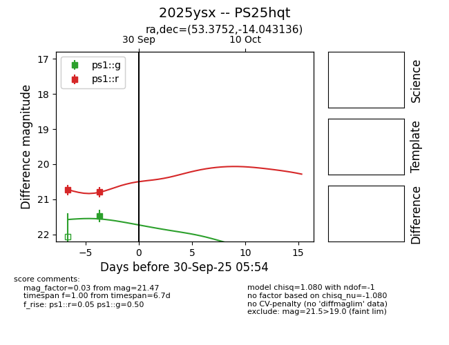
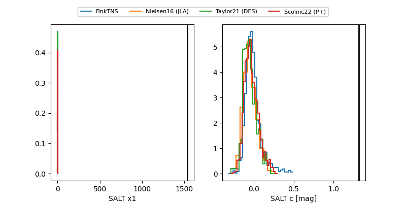

TNS: 2025ysx
YSE: 2025ysx
2025ysx (yse,tns)
PS25hqt (panstarrs)
equatorial (ra, dec) = (53.3752,-14.04314)
galactic (l, b) = (202.1224,-50.08687)


last ps1::g=21.47, ps1::r=20.79
1 ps1::g, 2 ps1::r detections